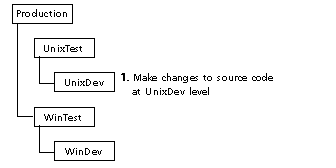
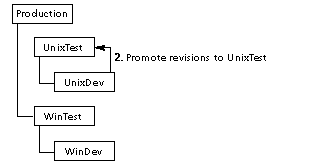
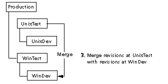
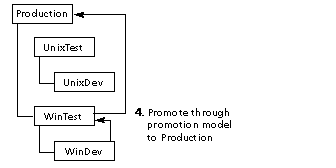

This scenario explains the implications of using a promotion model to accommodate branches for alternate versions of a product.
Note: If you never intend to merge a branch back to the trunk, or you plan to make major changes to either the branch or the trunk, we recommend that you create separate archives for each line of development.
The promotion model below accommodates multi-platform development. In each archive, the trunk is used to develop the product for Windows, and a branch is used to develop for UNIX.
WinDev -> WinTest -> Production
UnixDev -> UnixTest
Note that UnixTest never promotes to Production.
Designing a promotion model for this purpose is useful only if the changes made for the UNIX version are fairly minor and if merges are performed on a regular basis.
The following steps explain how you would:
Step 1: Developers make changes to source code at UnixDev level, creating branches for UNIX development.
Step 2: Developers promote revisions to the UnixTest group for unit testing. Revisions associated with UnixTest are never promoted to the top-level group. This ensures that all code is merged and then promoted through the proper testing phases before it reaches Production.
Step 3: Developers merge revisions associated with UnixTest with revisions at the WinDev promotion level.
Step 4: Promote revisions from WinDev to WinTest and finally to Production.
